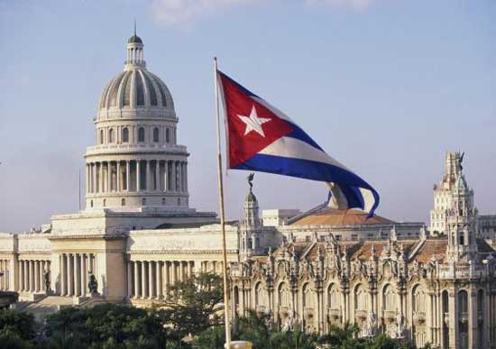

Андрей Борцов (Warrax)
Социализм без ярлыков: Куба
|
Я верил, что кому-то доподлинно известно, как именно надо строить социализм. Фидель Кастро |
Обзор разновидностей реализаций идей социализма невозможен без упоминания Кубы. Страна, которая и сейчас четко заявляет о приверженности социализму. Страна, долгие годы бывшая надежным союзником Советского Союза. Страна, которая не предала социализм, как это сделали бывшие соцстраны Европы после развала СССР. Страна, строящая социализм по собственному пути. И не просто собственному, но и не-марксистскому!
По понятным причинам, начиная с перестройки, о Кубе пресса пишет редко и, скажем так, не особо доброжелательно. Мол, остались еще такие динозавры…
Поэтому для начала —
Историческая справка
Куба — островное государство в карибском бассейне, открыта Колумбом в 1492 году. Около 400 лет была колонией Испании. Освободительное движение, начавшееся в первой половине XIX в., вылилось в 10-летнюю войну 1868-78 гг. против колонизаторов, которая не достигла своей цели. В 1895 году под руководством X. Марти и А. Масео кубинский народ вновь поднялся па вооруженную борьбу за свободу. В 1898 году, когда победа повстанцев была близка, США объявили войну Испании и оккупировали остров. В 1902 г. Куба была формально провозглашена независимой республикой, однако на деле превратилась в полуколонию американского империализма.
Время новой, социалистической Кубы наступило после того, как в ночь на 1 января 1959 Батиста и его приспешники бежали из страны. На Кубе победила революция.
Поддерживая кубинцев, СССР признал Революционое правительство Кубы сразу же — 10 января 1959 года. В феврале 1960 было подписано советско-кубинское торговое соглашение и соглашение о предоставлении Кубе советского кредита на сумму 100 миллионов долларов. В соответствии с этими соглашениями СССР стал поставлять Кубе нефть, промышленное оборудование и машины, продовольствие и сырье, закупать кубинский сахар и другие товары, а также оказывать ей экономическое и техническое содействие в развитии народного хозяйства, помогая кубинскому народу преодолевать последствия экономической блокады США. Советский Союз также помог Кубе, ставшей форпостом социализма у берегов Америки, в создании хорошо обученной и оснащенной современной боевой техникой армии.
Фидель Кастро быстро перевел экономику на социалистические рельсы. Уже к середине 1961 года 41% обрабатываемой земли находился в руках государственных имений и кооперативов, 90% промышленной продукции производилось на государственных предприятиях, государству принадлежали банки, бóльшая часть транспорта, внутренней торговли, установлена государственная монополия внешней торговли.
В апреле 1961 Ф. Кастро официально провозгласил Кубинскую революцию социалистической (обратите внимание: не сразу!). В процессе развития революции сложилось единство всех революционных сил страны, что выразилось в слиянии на марксистско-ленинской платформе «»Движения 26 июля», НСПК и «Революционного директората 13 марта» в единую организацию — Объединенные революционные организации (ОРО), которые в 1963 году были преобразованы в Единую партию социалистической революции Кубы. Она, в свою очередь, с октября 1965 получила наименование Коммунистической партии Кубы. Первым секретарем ЦК партии стал Фидель Кастро, оставаясь в то же время премьер-министром Революционного правительства.
Правящей и единственной разрешенной партией страны является Коммунистическая партия Кубы. Правительство Фиделя Кастро провело аграрную реформу, национализацию промышленных активов, развернуло широкие социальные преобразования, чем оттолкнуло многие группы населения, итогом же процесса стала массовая эмиграция недовольных, главным образом в США, где создалась крупная диаспора оппонентов Кастро и его политики.
С начала 60-х годов по начало 90-х Куба была союзником СССР, оказывавшего значительную финансовую, экономическую и политическую поддержку, деятельно поддерживала марксистских повстанцев и марксистские режимы Латинской Америки (Пуэрто-Рико, Гватемалы, Сальвадора, Никарагуа, Панамы, Боливии, Перу, Бразилии, Аргентины, Чили), Африки (Эфиопия, Ангола) и Азии, а также проводила политику оказания помощи гуманитарного профиля различным странам мира.
С распадом СССР Куба понесла огромные экономические убытки (до половины объема ВВП), и аналитики предсказывали скорое падение правительства Кастро, однако к 1994 году ситуация в основном стабилизировалась, и экономическое состояние страны международными организациями в настоящий момент оценивается как вполне удовлетворительное.
А теперь давайте подробнее по важным пунктам.
Противостояние США
Для понимания кубинского социализма важно понимать, что внешняя и внутренняя политика Кубы строится с учетом фактора противостояния враждебно настроенной сверхдержаве, от которой остров отделяет только полторы сотни километров Флоридского пролива. Истребителю F-16 хватит десяти минут для того, чтоб отбомбиться по Кубе и вернуться на базу. Такими истребителями США могут покрыть все воздушное пространство Кубы, тем более что средства противовоздушной обороны на острове несопоставимы с ударной силой американской авиации.
Вся история Кубы состоит из государственных переворотов, смены диктатур, политической борьбы в условиях сильного внешнего давления со стороны крупных государств, причем в новейшее исторические время — именно со стороны США.
В Америке официально приняты законы против Кубы. Режим эмбарго действует с 1962 года, когда годом ранее вторгшийся на кубинскую территорию морской десант наемников, подготовленных ЦРУ, потерпел поражение.
С 1966 года даже введен запрет на посещение Кубы для американских граждан. Более того — американцам запрещено совершать какие-либо сделки в Кубе (а еще точнее —тратить каким-либо образом деньги) без специального разрешения. Граждане США теоретически могут нарушить запрет, посетив Кубу с территории Канады или Мексики, и скрыть факт посещения, так как кубинские власти не проставляют штамп в паспорте, однако злостным нарушителям грозят тюремное заключение сроком на 10 лет и крупные штрафы (Agence France Presse, 2006).
Американским компаниям в третьих странах запрещено сотрудничать с кубинскими компаниями, компаниям третьих стран запрещено экспортировать в США продукцию кубинского производства или продукцию, содержащую кубинские компоненты. 12 марта 1996 года Конгресс США принял закон Хелмса-Бертона, предусматривающий дополнительные санкции против иностранных компаний, торгующих с Кубой. Судам, перевозящим продукцию из Кубы или на Кубу, запрещено заходить в порты США.
«Самая демократичная страна» отказывается снять санкции, несмотря на то, что против выступают не только страны третьего мира, но и Евросоюз, и даже американские битнесмены, которые понимают, что, когда эмбарго будет снято, то их возможности будут перекрыты предпринимателями других стран, уже обосновавшихся на Кубе.
В 2003 году президент США Джордж Буш объявил об ужесточении санкций, заявив, что «борьба за торжество свободы продолжается». В феврале 2008 года заместитель госсекретаря США Джон Негропонте подтвердил, что санкции сняты не будут.
Действовали США и не только экономическими мерами. На Фиделя Кастро было совершено не менее 15 попыток покушения, однако все они закончились провалом.
В настоящее время Белый Дом уже принял программу «демократических преобразований», на которую в бюджете США выделено $80 млн. Программа будет запущена, как только умрет Фидель.
Действуют Штаты и хитростью. Так, недавно они объявили о готовности расширить обмены с Кубой в религиозной, научной, образовательной и спортивной областях; предложили увеличить количество чартерных авиарейсов на остров и восстановить с ним прямую почтовую связь. Кроме того, любой американский гражданин, а не только иммигранты, имеющие родственников на Кубе, смогли бы переводить туда денежные средства в пределах 300 долларов в квартал (значительная сумма для Кубы). Что характерно, неправительственным благотворительным организациям разрешено превышать этот установленный лимит (на этом месте дружно вспоминаем, чем занимаются в РФ эти самые НПО, спонсируемые Западом). Администрация США даже заявила о готовности приступить к выдаче лицензий на продажу продовольствия и материалов, используемых в сельском хозяйстве, кубинским частным предпринимателям и мелким частным землевладельцам.
Мировое сообщество умилилось, кубинцы же, по-видимому, вспомнили две русские пословицы: «Мягко стелет, да жестко спать» и «Где коготок увяз, там и птичке пропасть».
Куба встретила предложения Вашингтона «в штыки», прекрасно понимая, что благотворительностью Штаты никогда не занимались, а зараженные чумой одеяла в качестве подарков — американская традиция, освященная временем
Не надо проводить кропотливый анализ, чтобы понять: шаги американской администрации по сути своей направлены на подрыв общественно-политического строя на Кубе. Точно так же, к слову, Россию настойчиво зовут в ВТО — обещая блага, которые на самом деле приведут к катастрофе. Также можно вспомнить политику Международного валютного фонда — назовите хоть одну страну, для которой кредит ВМФ обернулся благом, а не бедой. Короче говоря, ничего нового и все достаточно очевидно.
Надо честно признать, что в настоящее время кубинская экономика не в силах отказаться от валюты, получаемой населением в виде переводов из США и т.д. Допуск доллара в экономику был вынужденной мерой после предательства Кубы Администрацией России 90-х, позволившей спасти страну. Конечно, негативные последствия эта мера имеет, но на данный момент ситуация контролируется в достаточной степени.
Понятно, что резкое увеличение долларового потока, адресованного непосредственно населению, причем именно частным предпринимателям и мелким частным землевладельцам, приведет к возникновению слоя буржуазии, причем уже сразу компрадорской — как это происходит, русские знают отнюдь не понаслышке. Колея известна и накатана — социалистическая система рухнет, если на нее обрушится мощь международных корпораций.
Для тех, кто любит передергивать на «это доказывает, что капитализм имеет преимущество перед социализмом», поясняю: социалистическое государство за свой счет поддерживает много чего «бесплатного»: медицину, образование и т.д., не говоря уж о том, что при социализме стоит дешево, а при капитализме практически недоступно — то же собственное жилье. Кроме того, это ведь не «строго внутри страны решили на собственных ресурсах предоставить возможность наиболее предприимчивым выбиться в капиталисты». Система-то не замкнутая: на территорию вторгаются транснациональные корпорации, имеющие соответствующие ресурсы и желание монополии. Так что ни о какой честной конкуренции речь и близко не идет.
Понимая все это, кубинцы научились (причем «на ходу» и качественно!) контролировать процесс прямых иностранных инвестиций. Никелевая столица Кубы — город Моа — сегодня немыслим без присутствия там канадской компании «Шеррит», однако это никак не влияет на социально-политический климат. Доллары, которые получают рабочие как кубино-канадского совместного предприятия, так и чисто кубинского комбината, они целиком и исключительно тратят в, образно говоря, «магазинах по сбору валюты» — аналоге советских «Березок». Некоторой части населения при этом живется лучше, чем основной массе, но социализм и не подразумевает оголтелой уравниловки, о чем я не раз писал.
А вот массовое хождение иностранной валюты, причем «более ценной», ни к чему хорошему по понятным причинам не приводит — опять же, жители России знают это на собственном опыте. Именно поэтому на Кубе сейчас две собственные валюты — обычный песо и конвертируемый, для расчетов с иностранцами.
Почему же Куба все еще не стерта с лица Земли? Война — дело не только техническое, но и политическое, информационное. Особенно в наше время.
Куба прекрасно понимает и это, и поэтому ведет активную внешнюю политику. Она является одним из признанных и авторитетных лидеров «третьего мира», на нее равняются многие страны Азии и Африки.
Специализация Кубы — медицина. Тысячи врачей и учителей работают в странах Азии, Африки, Латинской Америки. Этим Куба создает себе авторитет и искреннее уважение у народов разных стран, и общественное мнение не верит западной антикубинской пропаганде. Именно поэтому оккупация острова, такая легкая с военно-технической точки зрения, весьма затруднена с точки зрения политической.
При этом хитроумные кубинцы не шарахаются от «идеологического врага», а умело используют противоречия между капиталистами.
Многим американским корпорациям выгодно торговать с Кубой. Воротилы американского бизнеса подкупают конгрессменов и сенаторов, чтоб те старались лоббировать смягчение санкций против Острова Свободы. Как уже говорилось, правительство занимает принципиальную позицию — и тут самое время подумать «кому выгодно» и что именно выгодно, если торгаши-американцы отказываются от прибылей.
Впрочем, позиция народа и позиция правительства страны может отличаться не только в России. Еще пример: в то время, когда испанское правительство пыталось способствовать изоляции Кубы, испанские ТНК расширяли свой бизнес на Острове. Аналогично действует и «British petroleum», игнорирующая антикубинскую политику британского правительства.
Я бы сказал, что это и есть настоящий социализм, действующий на благо своего народа, при этом не страдающий догматизмом.
Фидель: что дал социализм Кубе?
Выступление Председателя Государственного совета и Совета Министров Республики Куба Главнокомандующего Фиделя Кастро Руса на торжественном акте по случаю 40-й годовщины со дня провозглашения социалистического характера Революции (16 апреля 2001 года), в сокращении. Все выступление слишком длинное (Фидель любит и умеет говорить), тезисы я выбирал субъективно, так что тем, кто интересуется Кубой, рекомендую прочесть текс целиком (легко ищется в интернете).
 Без
социализма мы не смогли бы сократить уровень неграмотности до нуля.
Без
социализма мы не смогли бы сократить уровень неграмотности до нуля.
Без социализма у нас не было бы школ и учителей для всех детей без единого исключения, даже в самых отдаленных уголках страны, не было бы ни специализированных школ для всех, кто в них нуждается, ни стопроцентного охвата начальным образованием, ни охвата в 98,8 процента средним образованием, ни школ точных наук, ни полных средних школ, ни военных училищ, ни детских спортивных школ, ни школ тренеров и преподавателей физического воспитания и спорта, ни профессиональных училищ, ни техникумов и политехникумов, ни факультетов заочного обучения, ни школ иностранных языков, ни школ искусств во всех провинциях страны.
Без социализма на Кубе не было бы сегодня 700 000 человек с высшим образованием, 15 высших педагогических институтов, 22 медицинских факультета; в целом, 51 высшего учебного заведения, плюс 12 филиалов и отдельных факультетов, где обучается 137 000 студентов.
Без социализма у нас не было бы 67 500 врачей, более 250 000 преподавателей и учителей, 34 000 преподавателей физического воспитания и спорта — самого большого числа на душу населения по этим категориям среди всех стран мира.
Без социализма спорт не был бы правом народа и Куба не завоевывала бы на Олимпийских играх больше золотых медалей на душу населения, чем какая-либо иная страна.
Без социализма 85 процентов семей не были бы уже владельцами своих жилищ, не было бы электрифицировано 95 процентов страны, не получало бы питьевую воду 95,3 процента населения, не было бы построено 48 540 км дорог, не существовало бы 1 005 плотин и водохранилищ, где собрана почти вся вода, которую можно собрать для нужд сельского хозяйства, промышленности и населения.
Без социализма детская смертность не была бы ниже 8 на каждую тысячу родившихся живыми, наши дети не были бы защищены прививками от 13 болезней, средняя продолжительность жизни наших граждан не равнялась бы 76 годам, показатель СПИДа не составлял бы у нас 0,03 процента по сравнению с 0,6 процента в Соединенных Штатах и других развитых и богатых странах, не было бы более 575 000 случаев добровольной сдачи крови в 2000 году.
Без социализма мы не могли бы обещать, как уже это делаем, приличную работу для ста процентов молодых людей при единственном условии, чтобы они были соответствующим образом подготовлены, и не были бы развернуты программы, благодаря которым у всех будет возможность получить эту подготовку.
Без социализма не было бы возможно общество без нищих, брошенных на улицах, без босоногих детей и детей, просящих милостыню, без детей, которые не посещают школы, работают, чтобы выжить, или являются объектом сексуальной эксплуатации, или используются как инструмент для совершения преступлений, или образуют шайки, как это происходит в других частях мира, включая Соединенные Штаты.
Без социализма Куба не смогла бы вынести 42 года враждебности, блокады и экономической войны, навязанной империализмом, тем более десятилетний особый период, который еще не завершен; не смогла бы ревальвировать свою национальную валюту, доведя ее со 150 песо за один доллар в 1994 году всего лишь до 20 за один доллар в 1999 году, чего не добивалась ни одна страна; не смогла бы среди невероятных трудностей начать скромный, но устойчивый и прочный экономический рост.
Без социализма Куба не была бы сегодня единственной страной мира, которая не нуждается в торговле с Соединенными Штатами, чтобы выжить и даже продвигаться вперед как в экономической, так и в социальной сферах. В этой последней области в настоящее время даже самые богатые и промышленно развитые страны не могут состязаться с Кубой.
Мы одна из немногих стран мира, которая не принадлежит и не хочет принадлежать к Международному валютному фонду, превратившемуся в рьяного стража интересов империи. Ничего из того, о чем я говорил, не было бы возможно, если бы мы были по рукам и ногам связаны этим мрачным бреттон-вудским учреждением, которое политически губит тех, кому приходится к нему прибегать, дестабилизирует и свергает правительства и от которого не могут спастись те, кто связан двойным игом МВФ и неолиберализма, что является выражением несправедливого и иррационального экономического порядка, навязанного миру.
Без социализма все граждане не имели бы равного права получать бесплатно любые услуги в области образования и здравоохранения, чего бы они ни стоили, притом, что никто не спрашивает об их религиозных или политических воззрениях.
Без социализма у нас не было бы страны без наркотиков, публичных домов, казино, организованной преступности, людей, пропавших без вести, эскадронов смерти, линчевания и внесудебных расправ.
Без социализма кубинские семьи не могли бы видеть, как их дети растут здоровыми, образованными, подготовленными, не боясь, что кто-то подтолкнет их к употреблению наркотиков, к пороку, или того, что они могут погибнуть в школах от рук собственных товарищей.
Думаю, наглядно. Но, может быть, Фидель преувеличивает? Давайте посмотрим…
Факты: что дал социализм Кубе?
По данным О.Крыловой «Государственная социальная политика и социальное развитие Кубы в 1970–2000-х годах.», до революции для социальной сферы Кубы были характерны резкие диспропорции. Среднестатистический доход на человека был 250-300 песо в год, у 2% населения он превышал 8 тысяч, а сельское население получало 91 песо в год. Согласно переписи 1953 г., 23,6 % населения старше 10 лет было неграмотно. Сейчас же даже западная историография признает достижения Кубы в социальной области и то, что кубинцы гордятся социальными завоеваниями, которые они получили «благодаря своей коммунистической революции» - правом на работу, бесплатную медицинскую помощь, получение образования и так далее.
Социалистическая Куба вышла на первое место среди стран Латинской Америки в области просвещения, по уровню развития спорта, культуры. Здравоохранение же на Кубе находиться на более высоком уровне, чем даже в некоторых странах Западной Европы и по продолжительности жизни (76 лет) она уступает лишь Японии. На основе достигнутого опыта и новых технологических возможностей Куба подняла важнейшие социальные отрасли на такой исключительный уровень, о каком ранее и не мечталось, они и на современном этапе являются приоритетными отраслями.
Куба — первая из латиноамериканских стран, которая покончила с неграмотностью, поставила современную медицину на службу охраны здоровья трудящихся, сделала спорт доступным для каждого кубинца, приступила к решению задач подъема жизненного уровня населения. Обратте внимание — всего населения, а не отдельных групп. Бедность в кубинском обществе не возрастает, а неравенство, установившееся в социальных отношениях с началом кризиса на рубеже 90-х, когда Куба осталась одна окруженная как внутренними, так и внешними проблемами, и принявшее постоянный характер, также не слишком углубилось, благодаря внедрению систем налогообложения для работников частного сектора и других регулирующих мер. В силу того, что медицинская помощь и образование на всех уровнях являются бесплатными, более 1,4 млн. пенсионеров ежемесячно, без задержек и в срок, получают свою пенсию, гарантируется минимальная заработная плата, выделяется пакет продуктов питания по сниженным ценам, нищих на Кубе практически нет.
«…кубинская модель или “кубинский социалистический проект”, как его назвала кубинская исследовательница Э. Диас, совершенно противоположна неолиберальной модели глобализации, для которой характерны: рост бедности и неравенства, дискриминация отдельных групп населения, сужение возможностей для неквалифицированных рабочих, сокращение расходов на медицинское обслуживание, и тому подобные проявления.
В результате проведенного исследования, становится понятно, что в нашу беспокойную эпоху, Куба ступила на свою собственную тропу развития. Пятнадцать лет спустя, после того как одна часть прорицателей предрекали конец ее истории, а другая часть ставила на исчезновение кубинского социализма, Куба вписала новые страницы в историю и продемонстрировала, что выбор есть всегда, когда есть воля, решимость и реальный компромисс с народом. И сейчас она живет своей собственной жизнью, развивается по законам своей внутренней динамики, органически вплетенной в общемировой процесс», — пишет О.Крылова.
Куба — Остров Свободы, как ее еще называют, — является наглядным примером того, что глобализм отнюдь не является необходимым. И, несмотря на сложности жизни кубинцев (вызванные в первую очередь антикубинской политикой США), по многим параметрам Куба впереди тех стран, которые предали социализм и перешли в капитализи на третьих ролях.
Вот, к примеру, мнение украинца, причем свежее, декабро 2008 года. В. Дзюба, «50 лет Кубинской революции и судьбы социализма»:
«Куба добилась многого. Возьмем, к примеру, индекс развития человеческого потенциала (ИРЧП), который характеризует, одновременно как уровень, так и качество жизни.
Так вот, Куба по ИРЧП находится на 51 месте в мире и относится ООН к странам с высоким развитием человеческого потенциала. В Карибском регионе более высокое качество жизни имеют только Пуэрто-Рико, Барбадос и Багамы, а если брать Латинскую Америку в целом, то Куба уступает лишь Аргентине, Чили, Уругваю и Коста-Рике. Позади Кубы остались Мексика и Бразилия, не говоря уже о Колумбии и Перу. Но, если Куба с каждым годом поднимается в этом “табеле о рангах”, то все упомянутые страны, наоборот, опускаются. Таким образом, общественная модель, которую сконструировали Фидель Кастро и кубинский народ, доказывает свою жизненность.
А где мы, летавшие в космос еще в то время, когда европейцы на велосипедах ездили? Россия находится на 67-м месте. С Украиной еще хуже — 76-е место.
Вообще среди постсоциалистических стран по ИРЧП пока лишь Словения и Чехия по качеству жизни приблизились к странам “золотого миллиарда”. Но удивляться здесь не стоит — словенцы и чехи отлично жили и при коммунистах.»
Более 80% средств производства кубинской промышленности находятся в государственной собственности, а не у «эффективных собственников».
Иностранный капитал имеет менее 10%, притом собственность эта оформлена не напрямую, а через совместные предприятия с кубинским правительством. Транснациональные корпорации, работающие на Кубе, поставлены в очень жесткие рамки. Им запрещено покупать землю. Им запрещено также напрямую платить кубинским работникам; это делается только через государственные структуры. Они также не могут сбывать произведенную продукцию на внутреннем рынке Кубы.
Я лично считаю, что — в условиях Кубы — это именно что достижения.
При этом в отличие, например, от Северной Кореи, кубинцы могут почти свободно общаться с иностранцами, переписываться с американскими родственниками, при желании получить доступ в Интернет и т.д.
Куба на государственном уровне поддерживает экологически чистое сельскохозяйственное производство, и в этом плане у Кубы есть чему поучиться.
Кубу не следует рассматривать как страну, находящуюся в шаге от того, чтобы вернуться к капитализму, как бы этого не хотелось кое-кому. Наоборот, социалистической Кубе в силу ее уникальности есть что предложить миру в XXI веке.
Также важным фактором, делающим Кубу значимой в современном мире, является та реальная, а также и символическая роль, которую она сыграла в укреплении Боливарианской революции в Венесуэле.
Венесуэла, а вслед за ней и Боливия стали центром современной латиноамериканской антикапиталистической альтернативы общественного устройства. Однако вряд ли эти идеи получили бы столь широкое распространение, не будь примера Кубы.
И дело не только в сотрудничестве — сейчас Уго Чавес обеспечивает Кубу дешевой нефтью, а Куба обеспечивает Венесуэлу медицинской помощью, — а в том, что Куба уверенно держит знамя социализма, брошенное Советским Союзом в момент распада.
Медицина
Медицина на Кубе настолько важна, что я ее выделил в отдельный раздел. Лечиться на Кубу приезжают миллионеры, известные политики и спортсмены (вспомним, что Диего Марадона успешно вылечился под крылом у Фиделя от наркомании).
А. Александров, «Секреты кубинской медицины. Почему нищая страна лечит своих граждан лучше, чем Россия?»: «Из США тайно (официально американским гражданам посещение Кубы запрещено) приезжают врачи ведущих клиник, чтоб ознакомиться с кубинским опытом, — говорят в российском посольстве в Гаване. — Они нелегально покупают такие лекарства, как например, знаменитая кубинская вакцина от менингита, — больше нигде в мире ее не производят. Это не говоря о том, что кубинские доктора разработали так же и средство от лечения от гепатита В, да и по части лечения раковых опухолей опережают многие развитые страны мира.»
«Отцом» кубинского здравоохранения считается знаменитый революционер Че Гевара, некогда то владевший популярной дешевой клиникой в Аргентине. Именно он, врач по образованию, начал реформы, со временем превратившие страну в лидера здравоохранения всей Латинской Америки. Рецепт был прост донельзя: что бы ни происходило в стране, «срезать» выделяемые на здоровье людей деньги категорически запрещалось. Даже когда сразу после 1991 года (прекращения помощи из СССР) встали заводы, не ходили автобусы, полностью опустели магазины — никто в правительстве и не заикнулся о сокращении расходов на медицину.
Результаты? Если в 1958 году на Кубе было всего 3000 врачей, то сейчас в сфере здравоохранения (врачи, медсестры и обслуживающий персонал больниц) работают 350 000 человек. И это на 11 миллионов населения! Детская смертность составляет лишь 7 человек на тысячу (в России, для сравнения, — 18), а живут теперь люди в среднем на Острове почти по 80 лет — и следует учитывать, что при диктаторе Батисте они весьма редко доживали до 60.
«Я до сих пор помню: когда проходил практику в одной большой больнице в Москве, — говорит на отличном русском языке Луис, заместитель главврача одной из больниц Сантьяго, там новейшее заграничное оборудование лежало под снегом две зимы — некому было устанавливать. Здесь такого нет — на технику потрачена валюта, ее пациенты ждут — монтируют с ходу.»
На Кубе в ходу и сложнейшая микрохирургия глаза, и успешное лечение рака груди (для этого даже создан специальный институт молекулярной инженерии), создание сверхсложных вакцин институтом генетики и биотехнологий — кубинские врачи даже научились пересаживать мозговые клетки, чтобы лечить болезнь Паркинсона.
Думаю, мало кто будет спорить с тем, что всеобщая бесплатная и качественная медицина — одно из главных достижений социализма (или целей, если этого еще нет). Все «свободы» очень даже нивелируются, когда попадаешь в ситуацию, когда требуется дорогостоящее лечение.
Впрочем, есть и большая «ложка дегтя» — несмотря на все научные достижения в области медицины, на Кубе не хватает антибиотиков, медицинских инструментов, одноразовых шприцев, все по той же причине — эмбарго США.
Но, согласитесь, этот вопрос куда легче решаем, чем, скажем, восстановление системы здравоохранения в России.
Куба и СССР
Экономические и политические отношения СССР и Кубы начались сразу же после революции, в феврале 1960 года. На остров Свободы прибыл первый зампред Совета Министров СССР А. Микоян и привез молодому правительству Кастро огромный по тем временам кредит — 100 млн долларов.
И, если до революции про Кубу в Советском Союзе мало кто слышал, то после нее Куба стала одним из ближайших политических союзников и — неизбежно — одним из главных получателей экономической помощи СССР. Этот кредит и подписанное в ходе того же визита соглашение о закупках 5 млн тонн кубинского сахара ежегодно (по ценам, выгодным Кубе, а не «рыночным», пользуясь тяжелым положением) спасло режим Кастро, который США надеялись быстро задушить при помощи тотальной экономической блокады.
В течение последующих тридцати лет Советский Союз поставлял на Кубу почти буквально все: нефть и нефтепродукты, продовольствие, сельхозтехнику, запчасти, вооружения. Большая часть поставок шла в долг, в счет всевозможных кредитов, технической помощи, и т.д. Сами кубинцы шутили, что из СССР им не присылали разве что только снегоочистители. С Кубы в Союз шли сахар и цитрусовые, что было колоссальной помощью, поскольку американский рынок был закрыт, и никуда больше с таким количеством сахара, который страна производила, Кастро обратиться не мог.
В результате таких асимметричных отношений и образовался огромный долг Кубы перед СССР, а если еще учесть советские поставки вооружений и боевой техники… Тридцать лет кубинская армия полностью оснащалась за счет СССР.
Сергей Телегин в работе «Куба, которую мы теряем» перечисляет главные объекты, которые строились и реконструировались при помощи СССР.
Так, при технической помощи Советского Союза были сданы в эксплуатацию электро- энергетические предприятия общей мощностью 2,2 млн.кВт (45% всех энергетических мощностей страны): тепловая станция в Гаване (1300 Мвт), Ренте (300 тыс. кВт), Мариэле (200 тыс. кВт), Сантьяго-де-Куба (100 тыс. кВт), дизельэлектростанция на острове Молодежи (32 тыс. кВт) и др. По советским проектам и на основе поставок оборудования и материалов из нашей страны были построены и сданы в эксплуатацию свыше 2000 км линий электропередач напряжением 220 и 500 кВт, трансформаторные подстанции, центры зонального управления и т.д. Создана единая национальная энергосистема. В соответствии с генеральной схемой развития электроэнергетики на Кубе, разработанной совместно советскими и кубинскими специалистами, было начато сооружение атомной электростанции «Хурагуа» мощностью 1760 Мвт.
С помощью СССР велись работы по расширению завода в Санта-Клара, производящего тяжелое оборудование для сахарной промышленности. При содействии СССР была проведена реконструкция 156 сахарных заводов и построено 9 новых. Советский Союз оказал содействие развитию ряда других секторов АПК Кубы, что создавало условия для расширения импорта нашей страной ценной тропической продукции.
Растущая масса побочных продуктов в результате увеличения масштабов переработки сахарного тростника и цитрусовых позволила приступить к организации на кубинской территории совместного производства ряда нетрадиционных дефицитных и дорогостоящих продуктов: фурфурола, лизина, лимонной кислоты, пектина.
В области связи и телевидения с нашей помощью были построены и реконструированы различные объекты: коротковолновая радиостанция, ремонтная база средств связи, техническая база телевидения, заводы по производству телевизоров и транзисторных радиоприемников.
Во второй половине 80-х годов началось строительство нового завода по производству никель-кобальтового концентрата в Лас-Камариокас.
Примечательно, что практически во всех отраслях крупные промышленные или инфраструктурные объекты сооруженные при советском содействии, вводились или намечались к пуску в конце 80-х — начале 90-х годов. Участие в их эксплуатации открывало перед нашей страной реальные перспективы не только полной компенсации затраченных на их сооружение средств, но и получения весомых доходов.
Куба импортировала из СССР более 700 наименований товаров, в том числе нефть и нефтепродукты, машины, оборудование, запчасти, химические товары, продовольствие. На СССР и страны Восточной Европы приходилось в 1990 году свыше 80% товарооборота Кубы. Советская помощь обеспечила кубинскому народу возможность строительства самой культурной и самой передовой в социальном отношении страны в Латинской Америке.
Сотрудничество с Кубой не было дорогой с односторонним движением, как это порой пытаются изобразить противники связей с ней. Наиболее важное значение для экономики нашей страны имели поставки сахара. В 1960-1969 годы СССР импортировал с Кубы ежегодно в среднем по 2,1 млн. тонн сахара, а в 1986-1990 годах — около 4 млн. тонн в год. За счет этих поставок покрывалась треть потребления этого ценного продукта в стране. При этом закупки сахара-сырца на острове позволили отечественным сахарным заводам избавиться от полугодовых простоев после сезонной переработки урожая сахарной свеклы.
Куба превратилась для СССР в главного поставщика цитрусовых. Так, если в 1975 году на долю Кубы приходилось 3,6 союзного импорта цитрусовых и 2,7 их потребления, то в 1989 году — соответственно, 47,5% и 29,7%. Поставки дешевых цитрусовых из этой страны позволили начать массовое производство новых видов соков и прохладительных напитков.
Республика в течение трех десятилетий вывозила в СССР большую часть получаемого ею никелекобальтового концентрата. Только за двенадцать лет, с 1980-го по 1991-й, его общий экспорт составил 0,5 млн. тонн. Почти три четверти этого экспорта направлялось в СССР. Производимые в нашей стране из кубинского сырья никель и кобальт использовались в сталелитейной промышленности, ВПК, шли на экспорт, принося стране немалую валютную выручку. Привязка кубинской сырьевой базы к высокорентабельной и конкурентоспособной никелевой отрасли СССР позволяла ему доминировать в соответствующем сегменте мирового рынка. Причем на данном направлении открывались большие перспективы, поскольку разведанные запасы никеля на острове в конце 80-х годов оценивались в 813 млн. тонн, что составляло 37,5% от мировых. При этом нелишне напомнить, что все торговые операции с Кубой в тот период оплачивались рублями, а не остродефицитной свободно конвертируемой валютой.
Так был ли такой подход ошибкой?
Нет, и еще раз нет.
И дело не в том, что объем торговли между двумя странами достигал к концу 1980-х годов уже 3,6 млрд долларов в год, а «отбиваться» инвестиции в промышленность и т.д. должны были начать именно тогда, когда СССР распался, а новой Администрации эРэФии Куба оказалась без надобности.
В отличие от всеразличных африканских царьков, которые радостно брали деньги от того угодно, и неблагодарных европейцев, Куба ценила свои отношения с Советским Союзом не только на словах. Огромная помощь братскому кубинскому народу вполне себе компенсировалась возможностью «держать нож у брюха США». Военно-политический союзник менее чем в 200 км от Соединенных Штатов — это не фигня какая-нибудь.
В течение более трех десятилетий между нашей страной и Кубой осуществлялось тесное военное сотрудничество. В 60-80-е годы советские военные довольно прочно обосновались на Острове Свободы. Они активно эксплуатировали на постоянной основе центр электронной разведки в Лурдесе, который позволял следить за аэродромами СШа «в упор»; военно-воздушную базу в Сан- Антонио де лос Баньос, которая использовалась под наши стратегические бомбардировщики, осуществлявшими боевое дежурство в Северной Атлантике; военно-морскую базу в Сьенфуэгосе, которую особенно высоко ценили подводники, заводившие свои гигантские ядерные субмарины в уникальные кубинские бухты, где они как в «Бермудском треугольнике» исчезали из поля зрения американских радаров и эхалотов. На Кубе дислоцировалась мотострелковая бригада. В период Карибского кризиса численность советского воинского контингента превышала 20 тысяч человек, были размещены ракеты среднего радиуса действия с ядерными боеголовками и т.д. В течение многих лет на Острове работали сотни военных советников различного уровня.
Тысячи кубинских военных специалистов были подготовлены в СССР или на Кубе при советской помощи. Революционные вооруженные силы Кубы (РВС) были оснащены новейшим советским оружием. К середине семидесятых годов кубинская армия стала самой современной и боеспособной в Латинской Америке. По своему боевому потенциалу РВС уступали в Западном полушарии лишь вооруженным силам США и были способны самостоятельно выполнять задачи по противостоянию любому потенциальному агрессору.
Тезис о том, что-де СССР вооружал кубинскую армию, был справедлив лишь юридически. Фактически же мы держали форпост своей армии у самой границы США при помощи кубинцев. И, думается, что это очень даже нервировало американцев, у которых не было опыта войны на своей территории уже много лет.
Присутствие СССР в Карибах, без всякого сомнения, являлось важным звеном в поддержании военно-стратегического паритета, который в тот период сложился между двумя сверхдержавами.
А сейчас?!
Сергей Телегин, в той же статье (2001 г):
«1 января 2002 года кубинский народ будет отмечать 43-ю годовщину победы национально-освободительной революции, вырвавшей страну из пут неоколониальной зависимости от США и покончившей с диктатурой проамериканской клики местных олигархов-компрадоров. В этот же день, согласно решению Путина, прекратит свое существование на Кубе (таки да, прекратил — прим. А.Б.) российский радиоэлектронный центр (РРЦ) или, как его чаще называют за рубежом, центр электронной разведки, созданный еще в 1964 г. неподалеку от Гаваны в Лурдесе.
У России до настоящего времени оставались лишь два упомянутых стратегических военных объекта в "дальнем зарубежье", Камрань во Вьетнаме и Лурдес на Кубе. Достаточно взглянуть на карту, чтобы понять, что первый позволял "держать руку на пульсе" в АТР, а второй — в Атлантике и контролировать всю территорию Западного полушария. Эти две базы были теми крайними точками былого советского военного присутствия, которое помогало нашей стране поддерживать в течение полувека стратегический баланс сил на мировой арене. Заявление Путина о ликвидации этих баз событие знаменательное во многих отношениях.
РРЦ давал России 75% стратегической информации, необходимой для предупреждения агрессии, был главным инструментом контроля выполнения договоров о разоружении, подписанных с США, играл исключительно важную роль в системе ПРО, позволяя нашей стране контролировать все пуски ракет, взлеты самолетов, систему связи в Соединенных Штатах и т.п. После выхода Вашингтона из договора по ПРО ценность РРЦ возросла многократно. Поэтому отказ от него нельзя охарактеризовать иначе, как нанесение невосполнимого сознательного ущерба национальным интересам. Мало того, можно с достаточной долей уверенности констатировать, что упомянутым решением Путин практически поставил последнюю точку в истории современных российско-кубинских отношений, ибо центр электронной разведки практически оставался последним фундаментальным звеном, скреплявшим сотрудничество двух государств. Получается, что мы не просто уходим с Кубы, но при этом еще "сжигаем мосты" за собой.»
Предательство
«Россия — союзник США, разорвала все соглашения и предала Кубу. Не могу употребить другого слова, хотя и не намерен обвинять никого из руководителей в частности. Это были плоды их ошибок и жалкого поражения в идеологической борьбе против буржуазного, капиталистического и империалистического Запада под эгидой Соединенных Штатов».
Так с горечью сказал Фидель Кастро — и мне нечего возразить.
Только одно: предала не Россия, не русский народ, а те, под чьим руководством ведется сейчас антирусская политика и в РФ.
Но сейчас мы говорим не о России, а о Кубе…
Когда советская помощь прекратилась, Куба вступила в полосу тяжелейшего экономического кризиса, из которого окончательно не выбралась и по сей день. Для сравнения: в 1998 году Россия экспортировала на Кубу 840 тысяч тонн нефти, а в советские времена эта цифра достигала 15 млн тонн в год. Россия же продолжала закупать кубинский сахар, точнее, обменивать его на нефть, как и прежде, но уже по «рыночной» цене. «Эффективные собственники», как понимаете, не считают Америку за врага, и им не нужен форпост. Многие из них вообще бы приветствовали войска НАТО на русских землях.
В начале 90-х, когда Россия прекратила помощь и практически отказалась от кубинского экспорта, к тому же упали цены на сахар на мировых рынках. Куба тогда была близка к тотальному голоду. Когда рухнул коммунистический блок, внешнеторговый оборот Кубы упал в 300 раз — с $9 млрд. до $300 млн. «Остров Свободы» оказался на грани полного краха.
Все (в том числе и в РФ) искренне думали, что после прекращения помощи от СССР режим Кастро рухнет, как карточный домик. Тем более, что европейцы в это время радостной стайкой перебегали в капитализм.
Но Кастро мудро решал проблемы на ходу.
«Нет нефти из Москвы? Фидель приглашает арабских специалистов, говоря: “Ищите нефть, озолочу!” Следует сенсация — нефть находят (пусть и не очень хорошую), и теперь она обеспечивает почти на 100 процентов всю кубинскую энергетику. Перестали покупать сахар? Кастро снижает цены, и бизнесмены из России бросились за сахаром — смешно, но везти его с Кубы дешевле, чем покупать на соседней Украине. Не поступают деньги от братской КПСС? Кастро объявляет о развитии туризма: на острове как грибы растут отели, туристический сезон — круглый год, а количество туристов из Канады, Германии, Франции и Испании в прошлом году составило три миллиона человек, оставивших на острове два миллиарда долларов. Для страны с населением в 10 миллионов это более чем огромная сумма.»
И так далее…
Да, на Кубе и сейчас еще кризис, как и у всех, но не глобалистский, а со вполне понятными причинами.
Почему Куба смогла выдержать? Давайте подумаем…
Немарксистский социализм
Во всех статьях серии «Социализм без ярлыков» я последовательно провожу линию «социализм не обязательно основан на марксизме, более того — он НЕ ДОЛЖЕН быть на нем основан». Наглядная практическая иллюстрация — это именно кубинский социализм.
Прим: широко используется работа Р. Вахитова «Социализм Фиделя Кастро», в т.ч. в неявных цитатах.
Идеологи современной России стремятся представить революционную Кубу как некий «заповедник самого ортодоксального коммунизма», а Фиделя Кастро — «динозавром коммунизма», который неким чудом удерживает власть и в нашу «эпоху демократии».
«И даже забавно видеть, что и здесь, как и во многих других областях, наши либералы бездумно повторяют упрощенные схемы пропаганды позавчерашнего дня, просто меняя оценку на противоположную. Действительно, если раньше нам внушали, что Фидель Кастро и его соратники свергли проамериканского диктатора Ф. Батисту, руководствуясь исключительно “передовыми идеями марксизма-ленинизма»… и повторяли это с умилением и восторгом, то теперь они говорят по сути то же самое, только уже с отвращением и осуждением… Что ж, это еще одно доказательство того, что либералы наши — бóльшие догматики, чем обличаемые ими левые патриоты, которые нашли в себе силы преодолеть много стереотипов.»
Кубинская революция — нагляднейший пример того, социализм может быть не только марксистский. Кубинский социализм формировался с учетом специфики латино-американского цивилизационного характера — можно смело сказать, что он был изначально кубинским, а не интернациональным.
Естественно, в нем была и марксистская составляющая, представленная Че Геварой и Раулем Кастро — впрочем, их также сложно назвать ортодоксальными марксистами. А что касается самого Фиделя…
 Фидель
Кастро пришел в политику вовсе не как марксист. Молодой Фидель Кастро
принадлежал к левому крылу Партии Кубинского Народа (так называемой «Партии
Ортодоксов»). Идеологией партии были воззрения Хосе Марти (1853-1895) —
национального героя Кубы, теоретика и революционного практика освобождения
острова от испанского владычества. Хосе Марти выступал за независимый и
самобытный путь развития государств Иберо-Америки и в этом смысле был подлинным
латиноамериканским «почвенником». Как писал кубинский историк доктор Рамон де
Армас, Марти учил «о необходимости того, чтобы латиноамериканские и карибские
народы достигли своего собственного развития самостоятельно, на основе
собственных общественных, политических и экономических реальностей, без
подражания и копирования чужих формул».
Фидель
Кастро пришел в политику вовсе не как марксист. Молодой Фидель Кастро
принадлежал к левому крылу Партии Кубинского Народа (так называемой «Партии
Ортодоксов»). Идеологией партии были воззрения Хосе Марти (1853-1895) —
национального героя Кубы, теоретика и революционного практика освобождения
острова от испанского владычества. Хосе Марти выступал за независимый и
самобытный путь развития государств Иберо-Америки и в этом смысле был подлинным
латиноамериканским «почвенником». Как писал кубинский историк доктор Рамон де
Армас, Марти учил «о необходимости того, чтобы латиноамериканские и карибские
народы достигли своего собственного развития самостоятельно, на основе
собственных общественных, политических и экономических реальностей, без
подражания и копирования чужих формул».
Как видите, речь изначально идет не о марксизме, а о «почвенничестве», патриотизме. И, что немаловажно, о самостоятельности, поиске своего пути, а не в копировании любезно предоставляемых рецептов, почему-то так характерно завязанных на деньги, что в коммунизме, что в либерализме.
Конечно, в учении Марти присутствовали и социалистические мотивы. Так, известно гневное восклицание Марти по поводу бездушного духа североамериканского капитализма: «Американские законы дали Северу высокую степень благополучия и подняли его также на самую высокую ступень коррупции. Они монетаризировали его, чтобы сделать благополучным. Будь проклято благополучие, приобретенное такой ценой!». Но он был далек от марксистского социализма с его идеями пролетарской революции и относительно прогрессивного значения капитализма.
В своей знаменитой речи на суде «История меня оправдает» Фидель также выдвинул вполне социалистическую, но явно не марксистскую программу: он назвал в качестве политических целей своих единомышленников, помимо освобождения Кубы от североамериканского влияния, аграрную реформу с разделом земли между мелкими арендаторами, национализацию естественных монополий, индустриализацию под началом государства, широкие социальные программы, прежде всего, в интересах малоимущих и детей. Казалось бы, узнаваемая риторика, но, когда Фидель обратился к трудящемуся народу, он пояснил: «Когда мы говорим ”народ”, мы имеем в виду не зажиточные и консервативные слои нации, которым по нраву любой угнетающий режим, любая диктатура, любой вид деспотизма и которые готовы бить поклоны перед очередным хозяином, пока не разобьют себе лоб. Под народом мы понимаем, когда говорим о борьбе, огромную угнетенную массу, которой все обещают и которую все обманывают и предают, но которая жаждет иметь лучшую, более справедливую и более достойную родину». Но если в марксизме трудящиеся — это именно пролетарии, то Кастро отнес к трулящимся и крестьян, [временно] безработных, сезонных чернорабочих, врачей, учителей, инженеров, журналистов, и даже мелких торговцев. Куча «мелкобуржуазных элементов» и «интеллигентской прослойки».
Среди 82-х сторонников Кастро, тайком приплывших к берегам Кубы на яхте «Гранма» и высадившихся в провинции Орьенте 2 декабря 1956 года, был всего лишь один (!) коммунист — аргентинец Эрнесто Гевара де ля Серно — легендарный «Че».
Даже после 1 января 1959 года, когда повстанцы и оппозиция пришли к власти, речь не шла о социалистической революции в марксистском ключе. Во время неофициального визита в Вашингтон в апреле 1959 года, Фидель Кастро — уже руководитель революционной Кубы, охарактеризовал себя как «кубинского националиста».
Обратите внимание: социализм не может не быть националистическим!
Там же, в США, на вопрос: «является ли январская революция красной?» Кастро ответил: «скорее она цвета зеленых оливок» (по цвету формы Повстанческой армии). Впрочем, США «цвет революции» достаточно безразличен — главное, что страна выпадает из «мировой цивилизации» глобализма (в то время это еще не было так ярко выражено).
Знаменитая аграрная реформа, после которой «правые» прозвали Кастро коммунистом, также была национальной по сути: главным образом она была направлена против иностранного капитала и сросшихся с ним крупных землевладельцев, однако им даже компенсировалась утеря собственности, а мелкие землевладельцы от нее даже выигрывали.
Кастро охарактеризовал кубинскую революцию как социалистическую лишь на втором году революции. На похоронах жертв американской варварской бомбардировки острова Фидель произнес следующие слова: «Товарищи рабочие и крестьяне, наша революция является социалистической и демократической, революцией бедняков, которая делается силами бедняков и в интересах бедняков».
Но о марксизме — nota nene — ни слова!
Себя лично же он впервые назвал коммунистом за год до этого, в речи в редакции кубинской коммунистической газеты «Ой» (8 ноября 1960 года). В ней же Фидель заявил, что со студенческих лет изучал марксистскую литературу и даже «был марксистом» (именно «был», а не «является») и оказал влияние в соответствующем духе на своего брата Рауля.
Это несколько не соответствовало предыдущим выступлениям. Че Гевара в том же 1960 г., за месяц до «признания» Фиделя говорил в интервью американскому журналу «Лук» совершено противоположное: «Фидель не коммунист… Эта революция исключительно кубинская, а точнее — латиноамериканская. В политическом плане можно было бы квалифицировать Фиделя и его Движение революционно-националистическим».
В дальнейшем, с 1960 года и вплоть до 90-х годов, Фидель Кастро называл себя коммунистом и марксистом-ленинцем. Соответствующие изменения были произведены и на уровне госполитики: все революционные организации были объединены в одну, ставшую правящей партией и получившей вскоре название Коммунистическая партия Кубы. Атеизм стал государственной идеологией, а марксизм-ленинизм — официальной философией.
Советский Союз открыто признавался «старшим братом» и руководителем Кубы. Тем не менее, политический курс Кубы и в годы «советского протектората» сохранил определенную самостоятельность. Куба не была марионеткой СССР. Например, Куба отказалась войти в какие бы то ни было военные пакты, в том числе и в созданный СССР Варшавский блок, и так и осталась неприсоединившимся государством. Куба не стремилась слепо копировать советскую модель: переняв ее лучшие стороны, прежде всего социальную систему, Куба Кастро сохранила в экономике частный сектор. При аграрной реформе, превратившей большинство земель острова в государственное достояние, все же 39% земли было оставлено за частными собственниками (мелкими крестьянскими хозяйствами), конечно, при условии, что собственник работает эффективно и согласен сотрудничать с государством и придерживаться Госплана.
Очень правильный подход: взять у учителя лучшее и оставить ему его проблемы.
Более того, хотя Фидель Кастро публично и не отрекается от марксизма, высшее руководство партии и государства все больше говорит об особом, специфичном характере кубинского социализма и его отличиях даже от социализма Маркса и Ленина. Президент Национальной ассамблеи народной власти Кубы Риккардо Аларкон де Кесада сказал об этом в интервью российскому журналу «Эксперт»:
«…у нас на Кубе был подлинный и самобытный революционный процесс. …. Реалии кубинской системы — вовсе не те реалии, которые в своих работах рассматривал Ленин. У нас всего лишь есть воля, чтобы вести социальную политику, отстаивать справедливость и равенство. После крушения социалистического лагеря у нас было два пути — "переселиться на другую планету" или сохранить и развернуть нашу систему. Мы открыли доступ к капиталистическому способу производства, сделали то же самое, что Ленин когда-то сделал во времена нэпа. Но все же подчеркну: мы не пытаемся повторять какую-либо чужую модель социализма, модель, которая когда-либо была реализована. С самого начала революции мы решили, что социализм в Латинской Америке должен быть не копией, а "героическим созиданием". Сегодня многие в Латинской Америке думают также. Есть венесуэльский подход, есть бразильский. Мы должны бороться за многоцветный социализм».
Зачем Фидель стал называть себя марксистом? По весьма прозаичной и понятной причине: без вступления в социалистический лагерь Куба не просуществовала бы и года. Несмотря на то, что первые нападения контрреволюционеров кубинцы отбили, все же военная мощь США была несравнима с кубинской. СССР, понятно, вправе был требовать от своего нового союзника соответствующего идеологического антуража. Официальная идеология Советского Союза утверждала (и это было большим недостатком идеологии, что и послужило одной из причин проигрыша СССР), что в мире идет не геополитическая борьба, а борьба между двумя социальными системами — капиталистической и социалистической и всякий, кто выступал против капиталистического мира во главе с США, становился «социалистической страной» автоматически.
Так что коммунистическая риторика была вынужденной, на самом же деле на Кубе имеет место кубинский социализм.
Социалистическая Куба — это типичное традиционное общество, пошедшее по пути антибуржуазной модернизации, с опорой на социальное традиционное жизнеустройство и под руководством авторитарной партии.
Это и есть народный немарксистский социализм. Успехи Кубы показывают, что именно за таким «социализмом без коммунизма» — будущее всех незападных стран, если они не хотят, конечно, служить сырьевым придатком для западного «золотого миллиарда». Именно по этому пути идет Китай (о нем я уже писал), по нему пошла Белоруссия (о ней будет последняя статья цикла) и должна идти — нет иного выхода! — Россия.
Но вернемся к описанию Кубы, ее плюсам, минусам и особенностям.
Привилегии иностранцам
Есть на Кубе и специфика, которую сложно назвать социалистически правильной. В частности — отношение к иностранцам. К примеру, кубинцу ни при каких обстоятельствах не разрешено есть лобстера (стратегически важный экспортный продукт), тогда как иностранцам они предлагаются повсеместно.
Очень напоминает Торгсин (торговля с иностранцами) времен нэпа и около того, но еще более жестко: в Советском Союзе подобных запретов не было хотя бы на законодательном уровне.
Но является ли это отходом от социализма, особенностью кубинского социализма, либо чем-то еще?
Вспоминаем, о чем только что говорили — о значении туристического бизнеса для Кубы. Никакой идеологии в ситуации нет — речь идет именно о необходимости, даже не о целесообразности. Вполне возможно, что и с перегибами. Впрочем, возможно, что такая позиция — тоже приманка для туристов, т.к. в описаниях поездок на Кубу (читал, когда готовил статью) не раз писалось, что у местных можно вполне есть лобстеров дешевле, но нелегально. Так что, видимо, суровость закона компенсируется необязательностью исполнения (знакомо, да).
Зато туристов, можно сказать, доят. За привилегии надо расплачиваться.
На Кубе есть обычное песо, а есть конвертируемое. С существенной разницей в курсах. Более того, их функции достаточно четко разделены. Чтобы не утомлять описаниями, напомню, что в СССР также была финансовая система из двух «контуров». В производстве были безналичные деньги, они погашались взаимозачетами. На потребительском рынке действовали обычные деньги, масса которых регулировалась в соответствии с массой товаров. Это позволяло поддерживать низкие цены и не допускать инфляции. Такая система могла действовать лишь при запрете перевода безналичных денег в наличные. Масштаб цен в СССР был иным, нежели на мировом рынке, и рубль мог циркулировать лишь внутри страны. Для этого были необходимы государственная монополия внешней торговли и неконвертируемость рубля.
Аналогично этому конвертируемый песо используется практически только для иностранцев, причем цены для них, по сравнению с кубинцами, существенно повышены.
И такая система очень хорошо работает, «выкачивая» деньги из иностранцев и не допуская разрушения собственной хозяйственной системы.
Помните, как в 1989 гг. Либеральные реформаторы «раскрыли» оба контура финансовой системы СССР, а с отменой государственной монополии внешней торговли начался массовый вывоз товаров за рубеж? Возможность превращения безналичных денег в наличные (т.н. «обналичка») была одной из основных причин краха потребительского рынка, ну и всего народного хозяйства. Деньги из средства учета, чем они и должны быть, превратились в товар.
Нобелевский лауреат Дж. Стиглиц писал, что в ходе реформы в России принимались «наихудшие решения из всех возможных». Наихудшие – если смотреть с точки зрения интересов страны, но наилучшие с точки зрения противника, разрушающего экономику этой страны.
Куба такую ошибку не совершила и не собирается совершать, четко разделяя товарообороты.
Более того, Куба — единственная страна в мире, где доллар, образно говоря, подвергается дискриминации: при обмене американской валюты на конвертируемые песо удерживается 11,92%, тогда как евро меняются без всяких комиссионных. Банковская карточка, выпущенная американским банком (банкоматы и терминалы для безналичных расчетов встречаются все чаще), на Кубе абсолютно бесполезна, опять же, при операции с «долларовой» карточки удержат 11,92%. Зачем это делается — понятно; США являются «официальным государственным врагом». Обратите внимание, никакого двуличия: есть официальный враг, причем не какой-то липовый, а вполне себе существующий, но при этом на этом враге еще и зарабатываются деньги.
Кубинский социализм вообще отличается честностью.
Помните тот идиотский восторг, с которым во время перестройки и прочего разрушения страны встретило население долгожданные американские ценности?
Да и до этого среди обывателей был культ «заграницы», а идеологический аппарат СССР уже пребывал в глубоком маразме и лишь талдычил давно надоевшее, не актуальное и уже вредное «как писали Маркс-Энгельс-Ленин…». Даже сейчас большинству яркая этикетка важнее качества, хотя должны были бы уже распробовать.
Процитирую Александра Батова:
«На Кубе такой ситуации не возникнет. Если в Советском Союзе и в Восточной Европе партийные боссы берегли “непонятливый народ” от запретного плода западной культуры, то на Кубе можно свободно смотреть лучшие европейские, советские, американские фильмы. Кубинское руководство пошло по правильному пути — оно не боится за свой народ, делает ставку на высокую сознательность людей. Западная культура не скрывается, а наоборот открыто и критически обсуждается в кубинском обществе. Чтоб каждый кубинец знал, что это такое. Разъяснения и открытые обсуждения устраиваются и по той антикубинской, антикоммунистической пропаганде “американского образа жизни”, которую ведут контрреволюционеры из Майами.»
Вопрос эмиграции
Отсутствие «железного занавеса» обуславливает большое количество эмигрантов.
Это явление, с моей точки зрения, обусловлено отнюдь не социализмом, а общими для Латинской Америки проблемами экономического характера. Куба как развивающаяся страна, несмотря на огромные усилия по повышению уровня и качества жизни, просто не в состоянии за короткий исторический срок добиться более высокого уровня потребления, чем в США, живущих за счет эксплуатации всего мира. Особенно если учесть экономическое давление со стороны США, о котором говорилось ранее.
При этом в отличие от СССР, кубинские власти практически не чинили препятствий выезду с Острова Свободы желающим. Собственно говоря, возможность легкального отъезда зависело не столько от Кубы, сколько от Штатов, которые выдавали визы «на прием».
Еще в марте 1980 года Фидель Кастро весьма ответственно и справедливо заявил, что осуществление революции и строительство социализма – это абсолютно добровольное дело свободных людей. Эмиграция с Кубы в этих условиях выступала своеобразным клапаном социальной санации и способствовала частичному разрешению проблемы политического и экономического плюрализма. Часть населения, категорически несогласная с режимом, имела полную возможность искать счастья за пределами страны.
Куда более мудрая позиция, чем у руководства СССР. Скажем, тех же диссидентов, недовольных Советским Союзом, вполне логично было отпускать на волю, на Запад. Некоторых — так в принудительном порядке.
Примечание: я выступаю ни категорически «против», ни категорически «за» т.н. железный занавес в СССР, но расписывать подробно позицию тут не место.
Чтобы не было бедных
Помните старый анекдот про большевиков — мол, они воюют за то, чтобы не было богатых, а «мой дед хотел, чтобы не было бедных»?
Смешно это было только во времена горбачевщины, когда демагогия «все будут богатыми» раздавалась отовсюду. Результат сейчас всем (кто хотя бы иногда снимает розовые очки) виден наглядно.
Все просто. Если нет богатых, то все могут быть бедными, но могут и не быть: все зависит от общих ресурсов. А вот если есть богатые, то бедных не может не быть: богатства возможно достигнуть лишь в случае, когда другие становятся бедными. Если где-то нечто прибывает, то в другом месте неизбежно убывает. Элементарная логика.
А, главное, не надо смешивать достаток и богатство. При социализме у всех должен быть достаток — упрощенно говоря, никто не должен испытывать нужды в базовых потребностях. Причем я к ним отношу не только жилье, медобслуживание, образование, но сейчас уже и доступность компьютеров, интернета и так далее. Даже личный транспорт уже нельзя отнести к роскоши (хотя в крупных городах его количество уже превышает разумные пределы, но это — другой вопрос).
По этому параметру Куба достаточно сильно задерживается — причины уже упоминались. Так, иметь компьютеры в частном пользовании разрешили только в марте 2008 года. Впечатляет? Но обусловлен запрет был отнюдь не принципом «держать и не пущать», а элементарными проблемами с электроэнергией.
Рауль Кастро, издавая соответствующий указ, отметил: «Руководствуясь все большей доступностью электричества, власти пришли к решению разрешить продажу некоторых ранее запрещенных устройств.». Помимо компьютеров, был снят запрет на видео и DVD-плееры, 19 и 24-дюймовые телевизоры, электрические скороварки, рисоварки, микроволновые печи и т.п. Когда электричества стало хватать — разрешение было давно всем. Куда справедливее, чем разрешать неограниченное потребление узкой прослойке, держа других за третий сорт, не так ли? Если некто настолько эффективный менеджер, так пусть работает так, чтобы жизнь улучшалась у всех, а не только у «эффективного собственника».
Как известно, сам Фидель Кастро никогда не ездил на инкрустированных золотом лимузинах, как свергнутый им диктатор Батиста, и на фоне остальных коммунистических лидеров конца XX века выглядит аскетом. Он не пользуется спецраспределителями, получая еду по карточкам, как и обычный кубинец, и так далее. Читал где-то, что для визита в Европу 1995 г. ему пришлось специально пошить цивильный костюм — до этого в его гардеробе таких не было, лишь несколько военных френчей.
Сравните, кстати, со Сталиным — явная параллель. Да и Гитлер не оставил после себя каких-то богатств. Все они думали о народе, а не о мошне. Совершали ошибки, в том числе и критические, — но не из-за корысти.
В преддверии 50-летия годовщины начала кубинской революции «Аргументы и факты» подготовили серию эксклюзивных репортажей. Отрывок из одного интервью работника городской администрации в Тринидаде на тему настроений некоторых кубинцев «может, капитализм?»:
«— Кубинцы думают, что при капитализме все станут богатыми и счастливыми. Им еще предстоит узнать то, что уже знаете вы: всплеск преступности, когда убивают за копейку, уличные разборки между мафией, безработица, инфляция, сумасшедшая квартплата, платные медицина и образование. Получать же люди будут все те же 20 долларов, потому что все чиновники начнут воровать. Сейчас-то жизнь плохая, но я рад, что лечусь без денег и в стране нет мафии.»
Еще мнение:
«— Компартия не выпустит власть, — считает живущий в Майами бывший кубинский революционер, участник войны, приведшей к свержению в 1959 году диктатора Батисты Эрнесто Миас. — Она уже видела, к чему привело ослабление диктатуры в СССР, — страна рухнула. Править островом после братьев Кастро будет военная хунта, которая, скорее всего, проведет реформы по китайскому образцу. Даже я считаю, что лучшее для Кубы — это коммунизм. Почему? Сейчас народ кроет Кастро на чем свет стоит, но я уверен, что максимум через лет пять после того, как на Кубе установится капитализм, на острове начнется партизанская война в горах под лозунгом “Верните нам Фиделя!”.»
В.А. Бородаев в работе «Кубинская модель социализма: копия советской или воплощение национальной идеи?» отмечает, что характерной чертой кубинской модели является постоянная и непримиримая борьба с коррупцией. Своими корнями она уходит в дореволюционный период, когда в условиях неоколониального режима в стране коррупция приняла широкий размах. Она поразила всю прежнюю политическую систему общества, способствовало разложению правивших страной партий.
Одним из главных лозунгов революционного движения на Кубе в 50-е годы была борьба с коррупцией в государственном аппарате. Наряду с задачей национального и социального освобождения, выдвигавшихся революционным движением с конца 19 века, борьба против коррупции, будучи составляющей концепции социальной справедливости, вошла в качестве важнейшего звена в выковывавшуюся в течение столетия кубинскую национальную идею.
Это очень верно: социализм и коррупция несовместимы. Бородаев пишет:
«Коррупция представляет опасность для любого общества, для социалистического же она является системным врагом, ибо подрывает сами его основы, ведет его к перерождению, вызывает эрозию принципов социальной справедливости, наносит огромный моральный ущерб. В конечном итоге коррупция ведет к делегитимизации политической системы и кладет начало ее деинституционализации. Эти азбучные истины политической науки практически игнорировались в последние десятилетия в СССР и были очень хорошо усвоены кубинским политическим руководством.
Из анализа социально-экономической жизни дореволюционного кубинского общества, ситуации в Латинской Америке и других развивающихся государств политическое руководство страны вынесло глубокое убеждение в тупиковости расточительного капиталистического пути развития, отсутствия у него исторической перспективы. То, что может позволить себе “золотой миллиард”, оплачено потом, кровью, слезами, унижениями, дикой нищетой большинства человечества, грозит всей планете экологической катастрофой. Отсюда следовал отказ от восприятия потребительского общества и его ценностей в качестве эталона для подражания в кубинской модели социализма. Руководством Кубы был провозглашен курс на создание условий для обеспечения каждому индивидууму условий здоровой и достойной жизни, но без роскоши и расточительства потребительского общества, неспособного обеспечить социальную справедливость и прогресс в долгосрочной перспективе, особенно в странах ”третьего мира”. В отличие от кубинской модели социализма, в СССР и других европейских социалистических странах в качестве ориентира в последние три десятилетия был взят западный потребительский стандарт уровня и качества жизни. Это во многом способствовало перерождению режимов в СССР и в Восточной Европе.»
Замечу, что потребительский стандарт был взят именно что внешне, по «высшему среднему классу», да еще без учета стоимости жилья, образования, медицины и так далее.
При этом Куба стремится мотивировать население и материально. Рауль Кастро, президент республики Куба:
«Социализм означает социальную справедливость и равенство. Но равенство прав и возможностей, а не доходов. Равенство — это не уравниловка. Когда хороший работник получает столько же, сколько и ленивый — это не равенство, а эксплуатация хорошего работника.»
Да, сейчас Куба — слаборазвитая страна в плане дохода на душу населения. Но в ней нет безработицы, нет нищенства, нет наркомании, нет стариков, лишенных средств к существованию, нет детей, лишенных возможности учиться. Все кубинцы могут быть уверены в отношении таких важнейших сторон жизни, как работа, образование детей, охрана здоровья, обеспечение в старости. Население имеет доступ к различным культурным ценностям. Созданы многочисленные театры, библиотеки. Спорт и культурный досуг доступны всему народу. Учитывая прежде всего эти аспекты и отталкиваясь от них, можно рассматривать и количественные показатели уровня жизни кубинцев, которые нельзя измерять исключительно доходом на душу населения в денежном выражении, поскольку ряд важнейших благ предоставляется совершенно бесплатно и не зависит от номинальных денежных доходов на душу населения.
Пресловутая уверенность в завтрашнем дне — это очень важная вещь.
Патриотизм
Со времен перестройки русские живут в странной обстановке, когда национализм и патриотизм обозначают чуть ли не противоположное. А неумение отделить Администрацию эРэФии от Отечества привело к появлению уродов вида «лучше бы мы Германии проиграли Великую Отечественную» или даже сейчас жаждущих, чтобы войска НАТО разделили Россию на кусочки.
У кубинцев такого разделения нет. А. Батов в статье «Почти все, что вы хотели знать о Кубе… но не знали, у кого спросить», основанной на беседе с советником посольства Кубы в РФ Сантьяго Пересом, пересказывает его слова:
«У нас слово “патриотизм” в последние десятилетия приобрел ругательный оттенок… На Кубе же патриотизм — один из краеугольных камней социалистического общества.
Капитализм в Латинской Америке изначально имел колониальный характер. Сперва эту землю грабила Испания с Португалией, потом их сменили США. Грабеж принял крайние формы и был выгоден лишь небольшой кучке военных диктаторов и компрадорской буржуазии, которую “северный сосед” приводил к власти в той или иной стране нередко военным путем. Такая политика ставила под угрозу само существование латиноамериканских государств и потому входило в противоречие не только с интересами трудящихся (крестьянство, рабочий класс), но и с интересами практически всей нации. Это позволило знаменитому революционеру Хосе Марти создать в 1892 году Кубинскую революционную партию, объединившую представителей различных социальных слоев и в конце концов предрешившую изгнание с острову испанских колонизаторов.
Сегодня существование кубинского государства и нации снова находится под угрозой. И единственная возможность сохранить страну — социализм. Поэтому для всех кубинцев, живущих на острове, понятия патриотизм, социализм и революция — неразделимы.»
Кроме того, как верно подметил Бородаев в уже процитированной работе: «Характерно, что большая часть кубинской интеллигенции, включая наиболее известных поэтов, писателей, художников, артистов, стояла на леворадикальных позициях.»
Если в России в свое время были большие сложности с интеллигенцией, которая поддержала революцию далеко не вся, и то уже в основном постфактум, на Кубе этот слой общества принимал самое активное организованное участие в непосредственной борьбе за установление нового строя.
Сейчас же Остров Свободы стал желанным местом для многих латиноамериканских интеллектуалов. Практически вся кубинская творческая интеллигенция осталась в стране, несмотря на широкую эмиграцию из нее представителей других состоятельных слоев, чего нельзя сказать о большинстве остальных социалистических стран.
Любовь «в одну сторону» — это извращение, а не любовь. И на Кубе не только народ любит свою страну, но и правительство доверяет народу.
Добровольная народная милиция с первых дней революции была важным компонентом силовых структур.
Более того. Во времена перестройки, когда СССР формально еще существовал, его руководство довело до сведения кубинцев, что СССР не пойдет на прямой конфликт с США в случае нападения на Кубу.
Реакция кубинцев была показательной — сразу же началось формирование массового народного ополчения — «Войск территориальной милиции». Уже к середине 80-х годов ВТМ стали реальной военной силой. Их боевые подразделения, включавшие на добровольной основе мужчин и женщин, не подлежащих призыву в РВС, но способных носить оружие, насчитывало на начало 1985 года 1,5 млн. человек. Добровольные военизированные формирования были созданы на промышленных предприятиях и учебных заведениях. Также существует система добровольных крестьянских военизированных подразделений, которые в прибрежных зонах несут патрулирование совместно с пограничниками.
Обучить военному делу и вооружить практически все население страны может лишь та власть, которая опирается на массовую поддержку народа, не так ли?
Правительство Кубы вообще уделяет большое внимание работе с народом. Причем не формализму «…на последнем съезде Партии… как завещал великий…», Вообще-то такое отношение должно быть закономерностью социализма, но большинстве случаев оно реализовывалось далеко не на таком уровне.
На Кубе большое значение придают этике и культуре. Характерно не казарменное зажимание всего, что не соответствует каким-либо догмам, а сознательное, терпеливое, аккуратное внедрение истинно товарищеских отношений между людьми.
Александр Батов (та же статья):
«”Мы строим новое общество” — говорят кубинцы, и надо сказать, что они достигли больших успехов. Люди — это не масса. Люди — это человек. И работа с людьми — это не формалистское, ради галочки проведение политзанятий и лекций на тему “любовь к Родине”, как было в застойном Союзе. Это работа с каждым конкретным человеком, у которого свое имя, свое лицо, личность, интересы. Подготовке партийных социальных работников, умеющих индивидуально, “по-человечески” работать с людьми, на Кубу уделяют огромное значение. Коммунизм есть реальный, практический гуманизм; эти слова Маркса на Кубе помнят хорошо. А еще помнят и следуют словам Хосе Марти о том, что политика не должна быть искусством досужих размышлений о торговле; политика должна быть искренней. Как это реализуется? Единственно верным способом — через прямое участие трудящихся в управлении государством.»
Народ Кубы поддерживает свое (действительно свое!) правительство и имеет волю к победе. Это самое главное. Сейчас такая небольшая Куба — флагман социализма.
Опыт разрушения СССР: урок для Латинской Америки
На эту тему хорошо писали С. Батчиков и С. Кара-Мурза:
«Неолиберальная волна привела к резкому обогащению богатых — даже в богатых странах. Доля 0,1% самых богатых людей США в национальном доходе выросла за 20 лет в 3 раза. При этом соотношение средней зарплаты топ-менеджера и рабочего в американских корпорациях выросло с 30:1 до 500:1. Это — изменение качественное, чреватое риском дестабилизации общества и экономики даже самых развитых стран.
Глобалисты действовали жестко — из МВФ и Всемирного банка уже к 1982 г. были изгнаны все экономисты-кейнсианцы, сторонники регулирующего воздействия государства. Была проведена и чистка ведущих экономических факультетов. Была создана целая система фондов, финансирующих пропаганду неолиберализма и подготовку «пятых колонн» во всем мире.»
О причинах развала СССР можно писать долго и подробно, но я выделю три главных метода воздействия на государство, которые приводят к падению его в глобализм в качестве сырьевого придатка третьего сорта.
Во-первых, это подкоп под легитимность государства: коррумпирование аппарата с одновременным представлением его как «коллективного врага народа». Этим достигается как отчуждение народа от правительства, так и нарушение функционирования государства: коррумпированная часть госаппарата не может сосуществовать со здоровой, честной частью. Она борется не только с силами правопорядка, но со всеми функциями государства. Честный чиновник для коррумпированного — не просто конкурент, это его смертельный враг, не дающий «пастись в ареале обитания».
С этим у Кубы все в порядке — правительство не отделяет себя от народа, народ поддерживает правительство.
Во-вторых, национальная экономика разрушается посредством институтов глобализации (МВФ, Всемирный банк и др.), захват национальных рынков и разрыв традиционных экономических связей. В это Куба, в отличие от некоторых, вляпываться не собирается.
Прим.: впрочем, Куба является членов ВТО. Характерно, что, когда вопрос экономической блокады Кубы встал в ВТО (США стали накладывать санкции против всех иностранных фирм, торгующих с Кубой), и нарушение правил свободной торговли было очевидно, то представитель Клинтона на это ответил, что постановление ВТО, принятое против США, не имеет значения и не причиняет беспокойства, так как «мы не верим, что что-либо, что говорит или делает ВТО, может заставить США изменить свои законы» (Н.Хомский. Прибыль на людях. Неолиберализм и мировой порядок. М.: Праксис. 2002. стр. 117).
В-третьих, это пропаганда системы потребностей, удовлетворяемых только через Запад (сюда же — превращение национального правительства в компрадорскую буржуазию). Пока в России ценили достаток, но не делали культа из потребления — страна была великой. Но в годы перестройки население страны стало объектом мощной и форсированной программы по слому старой «программы» и созданию и внедрению в общественное сознание новой системы потребностей, весьма далекой от разумности. Культа потребления.
Куба здесь имеет фильтр в виде достаточно свободного отъезда желающих отправиться в капитализм.
Таким образом, Куба достаточно надежно защищена от глобализма — особенно с учетом того, что наглядные примеры других стран, начиная с СССР, известны. Проблема лишь в миниатюрности Острова Свободы.
Международная поддержка
Каково международное положение Кубы?
Дружба с Венесуэлой широко известна, но дело этом не ограничивается. У Кубы появляются куда более могучие союзники.
«РБК-Дейли», Анатолий Поморцев, «На Кубе продолжат строить социализм» (2008):
«Гавана стала главным пунктом латиноамериканского турне председателя КНР Ху Дзиньтао.
В частности, КНР взяла на себя обязательства по закупкам кубинского сахара и подтвердила желание участвовать в разработке нефтяных месторождений, обнаруженных на кубинском участке шельфа Мексиканского залива. Усиление связей Пекина и Гаваны указывает на то, что на Острове свободы может начаться строительство “капитализма с социалистическим лицом” по китайскому образцу.
Кроме того, китайский лидер сообщил, что уже в ближайшее время Пекин выделит до 100 млн долл. на восстановление и строительство на Кубе школ, больниц и осуществление других социальных программ. Но гораздо важнее то, что стороны достигли соглашения по закупкам кубинского сахара, являющегося главным экспортным продуктом этой страны. Одновременно было озвучено желание КНР инвестировать в развитие островной инфраструктуры и разработку нефтяных месторождений, обнаруженных на кубинском участке шельфа Мексиканского залива, до 2 млрд долл.»
Тему Китая мы уже разбирали и пришли к выводу, что в нем имеет место не «капитализма с социалистическим лицом», а именно социализм. С китайским лицом, если хотите.
«Визит главы КНР призван показать, прежде всего США, многовекторность китайской внешней политики. Это еще один знак усиления влияния КНР в Латинской Америке — оно станет одним из ключевых вызовов для администрации Барака Обамы. К тому же Пекин интересует, что происходит на Кубе в контексте передачи власти — не свернет ли она с социалистического пути?» — сообщил РБК daily аналитик ИК «Брокеркредитсервис» Андрей Диргин.
Таким образом, кошмар глобалистов начинает осуществляться — социалистические страны начинают тянуться друг к другу. А если учесть мощь и роль Китая в современном мире…
Куба сейчас является одним из ключевых внешнеэкономических партнеров КНР в регионе с оборотом межгосударственной торговли в 2,7 млрд долл. Китай, похоже, уверен, что инвестиции в Кубу не пропадут даром. Что же касается США — то они просто не могут серьезно помешать укреплению в регионе страны, являющейся их крупнейшим кредитором.
Кризис — время, когда социализм куда эффективнее капитализма, что не раз показывала история.
Новейшая история
Как известно, Фидель Кастро недавно передал полномочия Раулю Кастро.
Сразу же последовали перестановки в правительстве: со своих должностей были сняты десять министров, в том числе министр иностранных дел. Одновременно была частично изменена структура правительства — некоторые министерства были объединены.
Официальная информация была скупа и подчеркивала, что перестановки произведены с целью повысить эффективность правительства, и не более того, хотя смещенные министры и написали некие «покаянные письма». Сам Фидель назвал причиной отставок «мед власти, во имя которой они не принесли никаких жертв» и который «пробудил в них амбиции, приведшие их к тому, что они повели себя недостойно» В свою очередь, «это породило иллюзии у внешнего врага».
Возможно, отсылка к внешнему врагу — т.е. США — означает, что ушедшие в отставку хотели пойти на какие-либо уступки в переговорах с Америкой.
Интересно, что следствием перестановок в правительстве стало увеличение количества бывших и действующих военных: во многих гражданских министерствах на ответственные посты попали военные.
Однако надо понимать, что кастовости у кубинских военных нет: они всегда были частью революционного процесса и активными проводниками политики Кубы во всех точках Земного шара. Поэтому противопоставлять части аппарата управления Республики Куба или говорить о возможности резкой смены курса в результате внутреннего переворота нет смысла.
Леонид Грук, «Куба: новые надежды»:
«Как написал сам Фидель Кастро, все новые назначения были произведены с его ведома и одобрения. На мой взгляд, Рауль действительно выводит на руководящие посты свою команду, но не ради простой консолидации власти, а для проведения в жизнь собственной экономической программы. Известно, что нынешний кубинский лидер — сторонник распространения на все предприятия государственного сектора экономики системы perfeccionamiento empresarial, разработанной для предприятий — подрядчиков министерства обороны. В условиях мирового экономического кризиса цены на основные экспортные товары (никель и сахар) Кубы падают из-за снижения спроса, вызванного падением промышленного производства. В 2007 году сальдо торгового баланса было положительным в размере 500 миллионов долларов, а 2008 год страна завершила с дефицитом в 2 миллиарда долларов. Вероятно, это заставит правительство в ближайшее время начать переговоры со странами-кредиторами о реструктуризации долга.
В сложившихся жестких условиях Рауль Кастро решил внедрить опробованную в собственном ведомстве систему современного менеджмента и практик учета, которая дает большую свободу в принятии решений руководителям на местах. Одновременно по этой системе заработная плата привязывается к индивидуальным и коллективным результатам работы. Для достижения результата государственные предприятия имеют право сотрудничать с иностранными и могут конкурировать между собой.
Кроме того, Рауль начал передачу государственной невозделываемой земли в руки крестьян, кооперативов и государственных сельскохозяйственных предприятий, также передав право принятия решений о номенклатуре выращиваемых культур из соответствующего министерства на места. Стоит заметить, что Куба импортирует более 50% потребляемого продовольствия, что делает ее очень зависимой от мировых цен на продукты. Соответственно, земельная реформа призвана повысить уровень продовольственной безопасности острова в условиях мирового кризиса.»
Вполне правдоподобная версия.
Что ж — результаты всех этих мер нового кубинского правительства станут видны уже в текущем 2009 году.
Сегодня существование кубинского государства и нации снова находится под угрозой. Которая, впрочем, никогда не отступала достаточно далеко, особенно после распада социалистического блока во главе с СССР. И единственная возможность сохранить страну — социализм. Поэтому для всех кубинцев, живущих на острове, понятия патриотизм, социализм и революция — неразделимы.
Viva Cuba! Patria o Muerte!
2009 г.